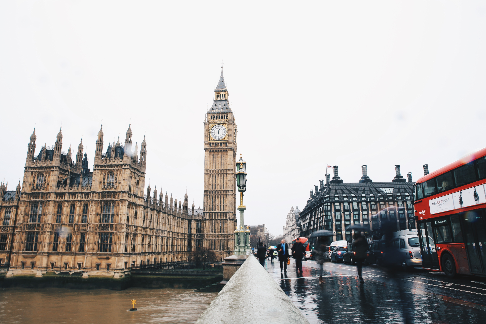
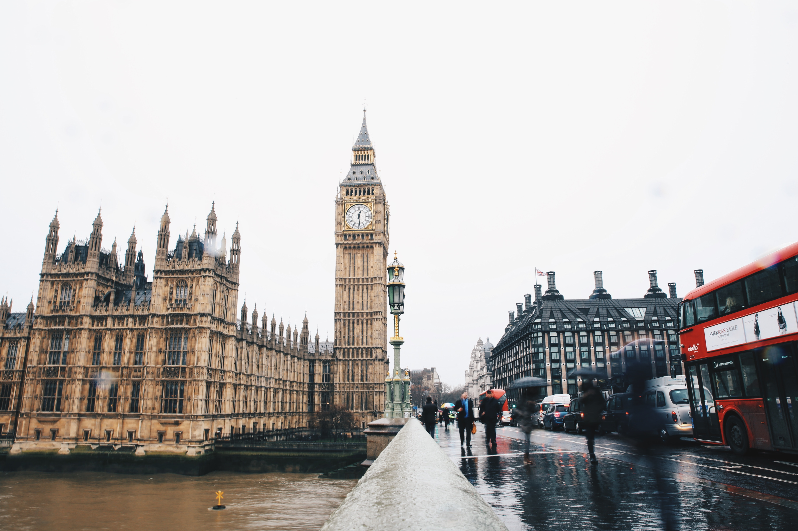

1. Itália: Coliseu de Roma
O principal ponto turístico da Itália é sem dúvida o Coliseu de Roma . É um dos monumentos mais famosos do mundo e atrai nada menos do que 4 milhões de turistas todos os anos. Sua construção se iniciou no ano de 72 d.C. e durante décadas, serviu de palco para gladiadores que lutavam entre si ou com animais para um público de mais de 70 mil romanos
A visita às ruínas do Coliseu é um passeio obrigatório a todos os turistas que visitam Roma e a Itália, não somente por sua grandeza, mas por sua história. Como a maioria dos brasileiros que viajam para a Itália, passam por Roma, acabam conhecendo o grande Coliseu.

2. França: Torre Eiffel em Paris
É claro que a Torre Eiffel de Paris não poderia estar fora dessa lista. Construída em 1889, ela conta com 325 metros de altura e 1.665 degraus, e você não pode deixar de visitá-la quando estiver em Paris. Vista de diversas partes da capital francesa, a Torre Eiffel é um marco de como um monumento pode tornar-se um símbolo de uma nação.
Não importa a época em que você está planejando ir a Paris e a França, conhecer a Torre Eiffel é quase uma obrigação, para estar no seu álbum de lembranças de sua viagem à Europa. Além de uma vista maravilhosa de Paris, há diversos restaurantes em torno da Torre Eiffel para curtir o clima da cidade. A Torre Eiffel em Paris está aberta todos os dias, inclusive nos feriados da França.


3. Inglaterra: Torre Big Ben de Londres
Outro ponto turístico famoso e um dos símbolos da Europa é o Big Ben de Londres . É no Big Ben que está instalado o parlamento inglês e é parada obrigatória para qualquer turista que visita a cidade de Londres e a Inglaterra, independente da época.
O bacana é que é possível fazer uma visita às seções do Parlamento gratuitamente, mas você tem de ir diretamente ao Big Ben e ver se haverá plenária no dia. Se quiser e estiver em Londres no verão, a dica é fazer um passeio guiado pelo interior do Big Ben para conhecer sua história e a importância dele para a Inglaterra. É considerado o principal ponto turístico de Londres.
 

4. Alemanha: Portão de Brandemburgo em Berlim
O principal ponto turístico de Berlim e da Alemanha é sem dúvida o Portão de Brandemburgo de Berlim, que é o símbolo mais importante da cidade e mais procurado pelos turistas. É um dos monumentos mais importantes da Alemanha e mais simbólicos da história do século XX e da Europa. Além de ser uma obra prima da arquitetura alemã, ele é símbolo da separação das duas Alemanhas, que eram divididas pelo Muro de Berlim.
Não tem muito o que fazer por lá, apenas tirar algumas fotos e apreciar o monumento. Como fica no centro, você pode aproveitar e já visitar outros pontos turísticos como o Potsdamer Platz, Catedral de Berlim e o Berliner Fernsehturm, que estão todos nessa região. Um pontos turístico que vale a pena conhecer em Berlim.